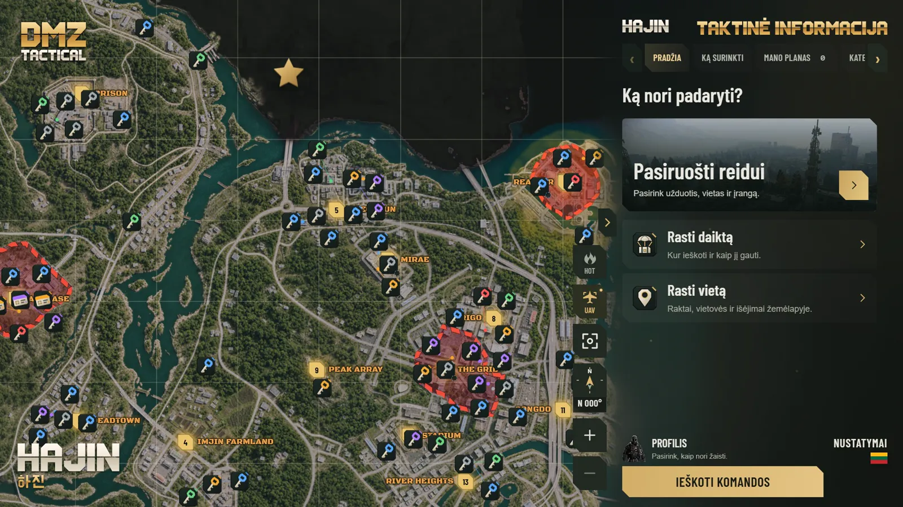

Hajin ir X01 žemėlapis su visais raktais
Greitas, priartinamas Hajin ir X01 Exclusion Zone žemėlapis. Jis veikia ir be interneto.
- Raktai, užrakintos durys ir svarbūs objektai pagal retumą
- Vietovės, išvykimo taškai, vadai ir langeliai (pvz., B5 ar F4)
- Pavojaus zonos rodo tikėtinas kautynes su žaidėjais
- UAV režimas rodo orbitinę žemėlapio peržiūrą

![Planas iki 1.0, nupieštas kaip reido maršrutas Hajin žemėlapyje nuo infil iki exfil. 0.9.2 X01, kuriama: X01 aukštų planai jau išleisti, ginklų komplektų kūrimą dar kuriame. 0.9.3 Atnaujinimai: kiekviena versija išbandoma kaip atnaujinimas, atsarginis pranešimas apie naują versiją ir Discord komanda /where. 0.9.4 Komandos planai: reido planas komandai su kodu ir kito sustojimo langelis F8 lange. 0.9.5 Reido žurnalas: ką parsinešei, pažymi po reido, ir žemėlapio pokyčiai po žaidimo atnaujinimų. 0.9.6 Mac: pirmoji bandomoji macOS versija. 0.9.7 Paskyra: planai visuose tavo kompiuteriuose, grįžta komandos paieška, naujos vietos pranešamos iš žemėlapio. 0.9.8 Maršrutai: siūlomas maršrutas tavo daiktams, pirmo reido vadovas, pulto valdymas F8 lange. 0.9.9 Galutinė patikra: Windows ir Mac, lietuvių ir anglų kalbos. 1.0 Pilna versija: Windows ir Mac, pilni Hajin ir X01 žemėlapiai. Nuolat: klaidų taisymai, spartesnis veikimas ir patogumas. Po 1.0: Android, iOS ir naršyklė. Planai gali keistis.](../assets/img/roadmap-mobile-lt.webp?v=r3)